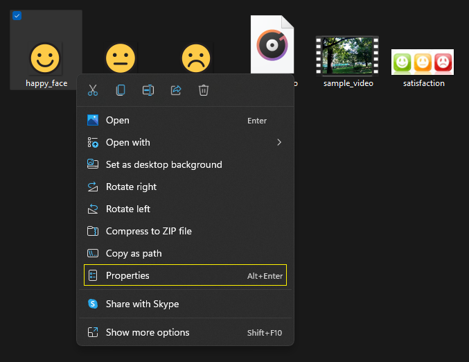
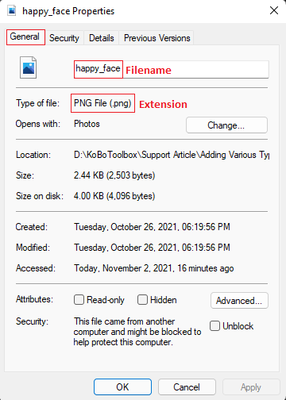
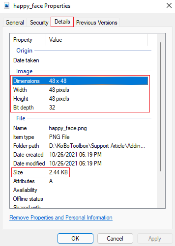

Search the knowledge base, browse our resources, and visit our forum for more detailed information
Read in English | Lire en français | اقرأ باللغة العربية
Última actualización: 15 Feb 2022
Además de preguntas de texto y opciones de texto, también puedes agregar varios tipos de medios (como imagen, audio y video) a tus formularios. Tener medios en un formulario a veces puede ayudarte a expresar tus preguntas y opciones de una manera mucho mejor.
Los medios en un formulario funcionan tanto en la aplicación de Android de Collect como en los formularios web (Enketo). Estos son los archivos de medios que actualmente son compatibles:
Medios |
Archivos |
|---|---|
Imagen |
jpeg, png, svg |
Audio |
aac, aacp, flac, mp3, mp4, mpeg, ogg, wav, webm, x-m4a, x-wav |
Video |
3gpp, avi, flv, mov, mp4, ogg, quicktime (qtff), webm, wmv |
Este artículo de ayuda tiene como objetivo ilustrar cómo se pueden crear formularios con medios con KoboToolbox. Sigue las instrucciones descritas a continuación para incluir medios en tu proyecto de encuesta.
Crea un proyecto de encuesta en la interfaz de usuario del editor de formularios de KoboToolbox (Formbuilder) y luego descarga tu formulario como XLS para agregar configuraciones de medios. El editor de formularios actualmente no admite agregar medios al formulario directamente, por lo que necesitarás editar el XLSForm descargado para completar esta acción.
Los nombres de archivo agregados al XLSForm deben coincidir con los nombres de archivo que diste a tus archivos de imagen, audio y video.
Si deseas agregar una imagen a una pregunta, entonces escribe media::image como
encabezado de columna en la pestaña survey de tu XLSForm. Escribe el nombre del archivo de imagen
junto con una extensión en la pregunta correspondiente justo debajo del
encabezado de columna media::image.
De manera similar, si deseas agregar una imagen a una opción, entonces escribe
media::image como encabezado de columna en la pestaña choices de tu XLSForm. Una
vez más, escribe el nombre del archivo de imagen junto con una extensión en la opción correspondiente
justo debajo del encabezado de columna media::image.
Si deseas agregar audio a una pregunta, entonces escribe media::audio como
encabezado de columna en la pestaña survey de tu XLSForm. Escribe el nombre del archivo de audio junto
con una extensión en la pregunta correspondiente justo debajo del
encabezado de columna media::audio.
De manera similar, si deseas agregar audio a una opción, entonces escribe media::audio como
encabezado de columna en la pestaña choices de tu XLSForm. Una vez más, escribe el
nombre del archivo de audio junto con una extensión en la opción correspondiente justo debajo del
encabezado de columna media::audio.
Si deseas agregar video a una pregunta, entonces escribe media::video como
encabezado de columna en la pestaña survey de tu XLSForm. Escribe el nombre del archivo de video junto
con una extensión en la pregunta correspondiente justo debajo del
encabezado de columna media::video.
De manera similar, si deseas agregar video a una opción, entonces escribe media::video como
encabezado de columna en la pestaña choices de tu XLSForm. Una vez más, escribe el
nombre del archivo de video junto con una extensión en la opción correspondiente justo debajo del
encabezado de columna media::video.
Este paso es para aquellos/as que tienen múltiples idiomas en su proyecto de encuesta.
Puedes tener una encuesta con múltiples idiomas y querer agregar varios tipos de medios relevantes para idiomas específicos. En tales casos, podrías seguir las ilustraciones proporcionadas a continuación.
Si deseas agregar imagen a una pregunta, entonces escribe media::image como
encabezado de columna en la pestaña survey de tu XLSForm. Escribe el nombre del archivo de imagen junto
con una extensión en la pregunta correspondiente justo debajo del
encabezado de columna media::image::Idioma (código de idioma).
De manera similar, si deseas agregar imagen a una opción, entonces escribe
media::image::Idioma (código de idioma) como encabezado de columna en la pestaña choices
de tu XLSForm. Una vez más, escribe el nombre del archivo de imagen junto con una extensión
en la opción correspondiente justo debajo del
encabezado de columna media::image::Idioma (código de idioma).
Si deseas agregar audio a una pregunta, entonces escribe
media::audio::Idioma (código de idioma) como encabezado de columna en la pestaña survey
de tu XLSForm. Escribe el nombre del archivo de audio junto con una extensión en la
pregunta correspondiente justo debajo del
encabezado de columna media::audio::Idioma (código de idioma).
De manera similar, si deseas agregar audio a una opción, entonces escribe
media::audio::Idioma (código de idioma) como encabezado de columna en la pestaña choices
de tu XLSForm. Una vez más, escribe el nombre del archivo de audio junto con una extensión
en la opción correspondiente justo debajo del
encabezado de columna media::audio::Idioma (código de idioma).
Si deseas agregar video a una pregunta, entonces escribe
media::video::Idioma (código de idioma) como encabezado de columna en la pestaña survey
de tu XLSForm. Escribe el nombre del archivo de video junto con una extensión en la
pregunta correspondiente justo debajo del
encabezado de columna media::video::Idioma (código de idioma).
De manera similar, si deseas agregar video a una opción, entonces escribe
media::video::Idioma (código de idioma) como encabezado de columna en la pestaña choices
de tu XLSForm. Una vez más, escribe el nombre del archivo de video junto con una extensión
en la opción correspondiente justo debajo del
encabezado de columna media::video::Idioma (código de idioma).
Carga y reemplaza tu XLSForm en el proyecto existente o crea un nuevo proyecto.
Ve a AJUSTES>Medios. Carga todos los archivos de medios que han sido referenciados en tu formulario.
Consejo: Reúne todos los archivos de medios que incluirás en tu proyecto de encuesta. Proporciona un nombre de archivo corto para cada uno de los medios. Los nombres de archivo con un espacio (por ejemplo, "libro rojo") no son compatibles con el sistema. Por lo tanto, necesitarás eliminar el espacio entre los nombres (por ejemplo, "librorojo") o usar '_' para un espacio (por ejemplo, "libro_rojo").
Una vez que hayas reemplazado el XLSForm y luego cargado todos los archivos de medios, necesitarás desplegar tu encuesta.
Cada vez que se agregan o cambian nuevos archivos de medios, necesitas redesplegar tu proyecto para que el cambio surta efecto. Puedes ver tus nuevos medios al previsualizar tu formulario antes del redespliegue.
Ahora puedes volver a Formulario>Recolectar Datos, y luego hacer clic en Abrir para verificar si los medios se muestran correctamente.
Los archivos GIF animados actualmente no son compatibles con Enketo o la aplicación de Android de Collect. Alinear medios a una ubicación deseada del formulario (alineación izquierda, alineación central o alineación derecha) tampoco es posible.
Selecciona un archivo de medios (imagen, audio o video).
Haz clic derecho con tu mouse cuando el archivo de medios aún esté seleccionado.

Luego selecciona Propiedades.
Ahora deberías poder ver el nombre de archivo y la extensión del archivo de medios en la pestaña General.

También deberías poder identificar las dimensiones y el tamaño de los medios en la pestaña Detalles. Si deseas tener imágenes pequeñas en tu pregunta u opciones, necesitarás cargar medios con una dimensión más pequeña, o viceversa.
Los medios en un formulario Enketo tomarán más tiempo en cargar si tienes archivos grandes. Intenta reducir los tamaños de los archivos de imagen, video o audio antes de cargarlos al servidor.

Puedes acceder al XLSForm aquí y a los archivos de medios aquí que fueron utilizados en este artículo.
Did you find what you were looking for? Was the information clear? Was anything missing?
Share your feedback to help us improve this article!
KoboToolbox is maintained by Kobo Inc.